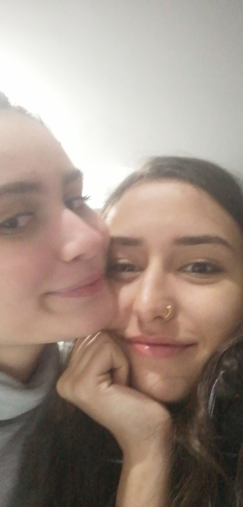
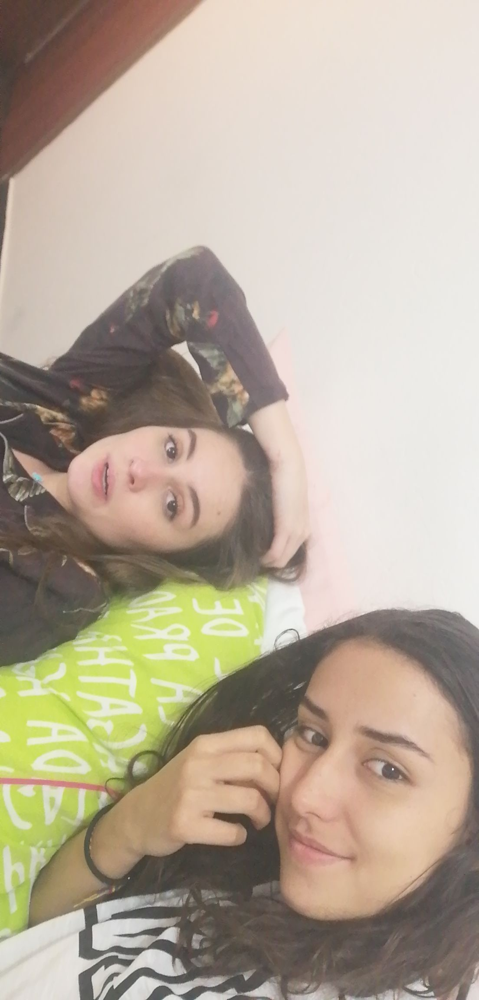

ajam
por tu cumpleaños quería solamente hacer algo diferente
Una canción que me recuerda a tihace un año bby

im really freaking happy d'etre ton amie


 


Actually Saro, I just want to remecier la vie pour ta vie. Je ne sais pas comme
est ce que tout est passé pour que nous soyons lá ici, maintenant. J'ai aucune idée de comme ca va etre la vie dans unes annés des maintenant, mais ce que je sais ca suffit pour savoir que il y a des peus chances pour s'y oser de faire ta vie comme tu veux:
de prendre un vol avec un destin inconu mais certainment gratificant.
Je voudrais te dire que j'amarais bien que tu continues de etre ca dans ma vie, partie de ce que je veux etre et je suis ravi de pouvoir faire partie de ce procés a toi aussi, to be honest
I've got que des bons souvenirs, que des sourires, des grands conversations, des recettes fait par nos mains, des idées construite des nos spirits, des espoirs refflechisait par nous, des choses bonnes dans la vie. il y a aussi des temps qu'on sais pas
quoi passe, que on a l'impression qu'il passe rien: mais tiens toi, ta vie viens de commencer et moi personallement, je crois que la vie recommence chaque fois qu'on rigole, qu'on fais un bisou, qu'on s'exprime tel comme on veut, qu'on lise, qu'on refflechi, qu'on etudie quelque chose interessant
et je te jure, je sais que il aurait des choses a decouvert encore.
J'aime bien de pouvoir partager bcp des choses avec toi, j'ai confience sur toi comme j'ai en personne et n'oublie jaimais Sara: tu m'a fait tomber et ouvrir ma tete quand j'avais 12 ans j'espere
que tu le oublies pas. JAJJAJAJ mentira, pero sí :(. Igual, quiero que sepas que una vez más te lo recuerdo: eres una persona increíble y llena de vida, de amor y de mente. Estás destinada a la sabiduría bbcita, disfruta
cada momento que tengas de instrospección: mírate y escúchate, eso es importante, entender que no todo es entendible y que está bien sentirse perdido en la lucha interna.
Sin embargo, si algo he aprendido es a no dejar que los miedos hablen por mi, también que aveces está bien gritar, pedir ayuda y dejarse llevar: expresarse.
Finalmente todo esto para reconocer nuestra fragilidad humana y esa incertitud rampante.
Al fin y al cabo, la vida sí es un juego, una pelicula y todo eso: pero no hay más certero que la incertidumbre.
Recuerda siempre que hay personas a tu alrededor (como sho) que te queremos y apreciamos por ser tú, que queremos verte feliz y brillando.
La vida es una celebración también, así que hoy, para celebrar tu vida, voy a regalarte un poquito de lo que sé que te gusta y de cosas que te podrían interesar.
Aquí voy:
por tu cumpleaños quería solamente hacer algo diferente
Una canción que me recuerda a ti
en este sirve el primer servidor, en francés
OK, para esta página hay instrucciones muy precisas. 1. elegir el servidor Upstream -en la parte de abajo aparecen las opciones- es el único que funciona.
2. no pongas play en la la flechita de play sino solo oprime cualquier otra parte de la pantalla, te va a aparecer una ventana emergente solo ciérrala,
Está en french, Sí me demoré todo ese tiempo en descubrir todas esas cosas. JAJA
YESS está la encontré re facil bb im proud, French sub español :)
Published in 1929, Woolfs essay took on the established literary criticism of the time, which claimed women were inherently lesser writers and creators by virtue of their gender. Instead, Woolf pointed to the vast, systemic education and economic failures that stifled women writers of the time.
Suffice it to say that feminist theory can be a bit dense for some. Thats why beloved feminist author and cultural critic bell hooks set out in 2000 to create an educational text for those whose understanding of feminism comes from passing TV references and outdated ideas about feminazis.
If we dont stand in solidarity for all women, how will we really progress? In her searing collection of essays, Mikki Kendall takes aim at the legitimacy of the modern feminist movement, arguing that it has failed to address the needs of all but a few women. Drawing on her own experiences, along with incisive commentary
on politics, pop culture, the stigma of mental health, and more, Hood Feminism delivers an irrefutable indictment of a movement in flux.
This dystopian novel by Margaret Atwood explores power and gender through the story of Offred, a Handmaid in the Republic of Gilead. In Gilead, Handmaids are valued only for their ability to reproduce, and are assigned to wealthy families to provide them with children.
Curated by Scarlett Curtis, activists, actors including UN Women Goodwill Ambassador Emma Watson and other public figures, each take a turn in exploring their own personal take on feminism.